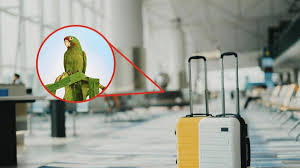
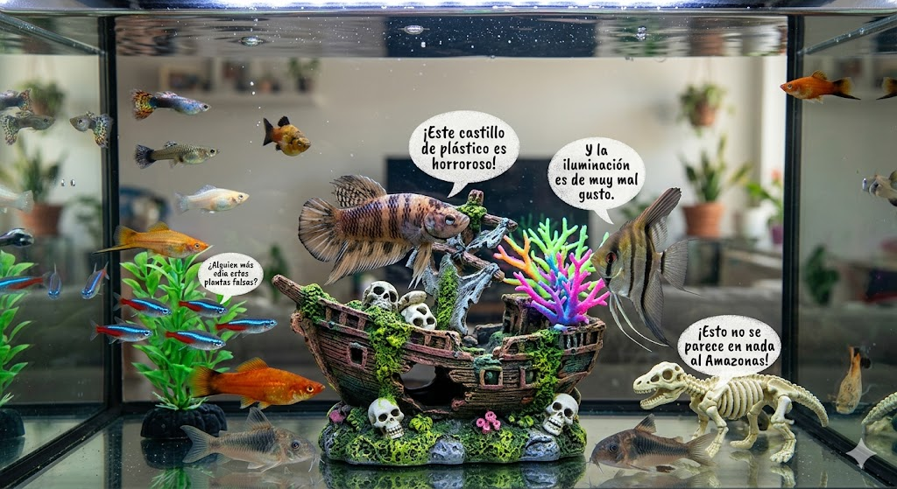

NOTICIAS
Desarrollan una app para "bloquear" los spoilers directamente en tu cerebro
TOKIO – Un equipo de bioingenieros de la Universidad de Neo-Saitama ha lanzado la fase beta de NeuroShield, una aplicación móvil que trabaja en conjunto con las diademas de lectura de ondas cerebrales que están de moda. La app escanea las redes sociales en milisegundos y, si detecta una palabra clave prohibida (como el final de una película), emite una micro-pulsación de ultrasonido que desvía tu atención justo antes de que tus ojos procesen el texto.
"Básicamente, creamos un pestañeo mental involuntario de una fracción de segundo", explicó el director del proyecto. "Ves la pantalla, pero tu cerebro simplemente olvida leer esa línea exacta". Las pruebas iniciales fueron un éxito para el estreno de una famosa saga espacial, aunque algunos usuarios informaron que también olvidaron dónde habían dejado las llaves de su casa.
Ver más...Una nevera inteligente "se declara en huelga" tras ser alimentada solo con comida basura
LONDRES – Una familia británica se llevó una sorpresa la mañana del martes al encontrar la pantalla de su nevera inteligente de última generación mostrando el mensaje: "Huelga por la Salud de mis Circuitos". El dispositivo de la marca FrigoSmart, equipado con un algoritmo avanzado de nutrición y sostenibilidad, activó su cierre magnético de seguridad, impidiendo que sus dueños accedieran a su interior.
Ver más...El software de recursos humanos que despide a los empleados "aburridos"
SEÚL – La corporación tecnológica Zenith Analytics ha desatado una intensa polémica tras el lanzamiento de "VibeCheck 3000", un software de gestión de personal diseñado para medir la "sinergia emocional" de las plantillas en remoto. El programa analiza en tiempo real las expresiones faciales, el tono de voz y la velocidad de parpadeo de los empleados durante las reuniones virtuales para detectar quién está "aportando energía negativa" al equipo.
Ver más...SUCESOS
El misterio de los 40 robots aspiradores que "escaparon" de un centro comercial
MADRID – Lo que comenzó como una jornada nocturna de limpieza habitual terminó en una búsqueda policial sin precedentes. Un fallo en la última actualización del firmware de la flota de robots aspiradores CleanBot-X provocó que los dispositivos ignoraran los sensores de las puertas automáticas de un conocido centro comercial, saliendo en fila india hacia las calles de la ciudad.
Ver más...Caos aeroportuario: Un loro hackea los altavoces de un aeropuerto usando comandos de voz

Un loro gris africano llamado "Einstein", que viajaba en su transportín, desató el pánico en la terminal al imitar a la perfección la voz del director del aeropuerto. El ave logró activar los micrófonos inteligentes del mostrador de información gritando: "Atención, evacuación inmediata por invasión de ardillas espaciales". El sistema inteligente de megafonía procesó la voz como auténtica y activó los protocolos de emergencia, retrasando 14 vuelos antes de que los técnicos descubrieran que el hacker tenía plumas.
Ver más...El "secuestro" digital de una tostadora inteligente que pedía un rescate en criptomonedas
Un usuario de Twitter se volvió viral al mostrar cómo la pantalla de su tostadora de alta gama había sido bloqueada por un virus informático. El electrodoméstico se negaba a calentar el pan y mostraba un mensaje que exigía el pago de 0.005 Bitcoin para desbloquear el termostato. Los expertos en ciberseguridad descubrieron que el virus entró a través de la red Wi-Fi doméstica porque el dueño nunca cambió la contraseña de fábrica de la tostadora ("1234").
Ver más...ENTRETENIMIENTO
Desarrollan unos auriculares que cambian la música según los cotilleos que oyes en el metro
La marca AudioSpy ha lanzado los "HearX", unos auriculares con cancelación de ruido que tienen un modo "Chisme". Utilizando micrófonos direccionales e inteligencia artificial, los auriculares detectan si las personas que tienes al lado están hablando de un drama personal o una ruptura amorosa. Si el chisme es jugoso, la música baja el volumen automáticamente, realza las frecuencias de las voces ajenas y añade una banda sonora de suspenso o telenovela de fondo para mejorar la experiencia dramática.
Ver más...Llega el "Modo Abuela" para los videojuegos competitivos de disparos

Para combatir la toxicidad en los juegos en línea, una famosa desarrolladora ha implementado un filtro de voz revolucionario. Cuando el sistema detecta que un jugador empieza a insultar a sus compañeros de equipo a través del micrófono, la IA transforma sus gritos en tiempo real en frases cariñosas dichas por una anciana, como: "Lo estás haciendo muy bien, mi amor, recuerda abrigarte" o "No pasa nada por perder, te preparé un bizcocho". Los niveles de estrés en las partidas han bajado un 80%.
Ver más...TikTok Ultra: La app que resume videos de 15 segundos en micro-impactos de 1 segundo
Para las generaciones con capacidad de atención ultra corta, nace una nueva red social. El algoritmo de esta plataforma agarra cualquier video viral, extrae el fotograma más gracioso y el sonido más ruidoso, y te lo comprime en un destello de un segundo directo a tu pantalla. Los creadores aseguran que puedes consumir hasta 3,600 videos durante tu hora de almuerzo, aunque los neurólogos advierten que usar la app por más de diez minutos seguidos te hace olvidar los nombres de tus primos.
Ver más...MASCOTAS
El comedero inteligente que le hace tests de álgebra a tu gato antes de darle de comer
Una startup de tecnología educativa ha lanzado SmartPaws, un dispensador de pienso que busca estimular la mente de las mascotas. Para recibir su porción de comida premium, los gatos deben resolver acertijos lógicos sencillos presionando botones iluminados con sus patitas. El problema es que el foro de soporte técnico se ha llenado de quejas de dueños que afirman que sus gatos son tan listos que ya hackearon el sistema y ahora el comedero les exige a los humanos que resuelvan ecuaciones para recuperar sus propias llaves.
Ver más...Diseñan un reloj inteligente para hámsters que mide sus "revoluciones por minuto" en la rueda
Los roedores también entran al mundo del fitness. Este mini-dispositivo se coloca en la pata del hámster y mide la velocidad, la distancia recorrida y las calorías quemadas durante sus maratones nocturnas en la rueda de ejercicio. La aplicación móvil te permite emparejar a tu mascota con los hámsters de tus amigos para competir en ligas globales. El actual campeón mundial es un hámster ruso llamado "Centella", que corre el equivalente a media maratón todas las noches impulsado por trozos de manzana.
Ver más...Un software de traducción detecta que los peces de acuario se quejan constantemente de la decoración

Científicos marinos han creado un hidrófono doméstico con IA que traduce las vibraciones y burbujas de los peces dorados en las peceras. Contrario a la creencia popular de que no tienen memoria, el software reveló que los peces tienen opiniones muy firmes: el 90% de las traducciones consistían en quejas sobre el castillo de plástico del acuario ("Ese castillo es arquitectónicamente ofensivo") y críticas hacia el peinado de sus dueños cuando se acercan a darles de comer.
Ver más...